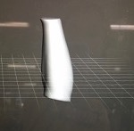
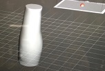
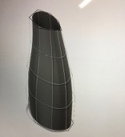
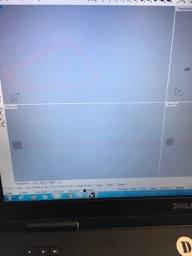
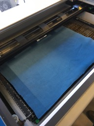
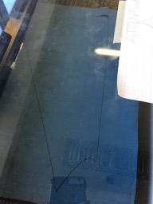
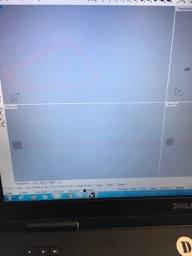
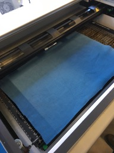
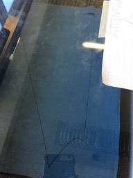
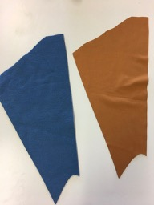

In order to produce we worked off the following steps:
HEATme can be personalized for many body parts such as, legs, arms, or around the belly and back. We chose to fit it to a leg for our prototype.
So the first step was to scan the leg.
The body needs to be scanned slowly and carefully to prevent holes and cracks. The file comes as an obj format and can then we worked with in Meshmixer
 After Meshmixer, the file is imported to Fusion 360, where a zylinder is pulled and adjusted over the leg. The body is cut horizontally into two parts and then saved individually as stl files. These two body parts can then we transferred to exactflat.
And here it is in exactflat and also ready to cut.
 





Since we will do two layers, here are the bottom and top layer of the back part.
Here you can see that we forgot to delete the line in the middle so it was cut, too.

Now we needed to design the pattern for the embroidery which would be the conductive yarn that is supposed to heat up. We did that with illustrator.

Then the fabric was prepared and embroidered.


Understanding and programming the arduino took a lot of time. Here are some pictures of our work.


We thought the power of added lithium batteries would be enough, but later found out that we need more volt. So our plan is to connect two 9V batteries.
The task was to programm the arduino software. Our goal for the prototype was to recognize the skin temperature and start heating when it reached 15 degress. It then should heat up to 25 degrees and then turn off. The temperature sensor was not correct in the beginning and connecting and adjusting kables is a little complicated. So first we just tested if the arduino would actually heat at all.
Here you can see that it worked.
.jpg)
So then we knew we could programm the real task!
BBBIIIILLLLD VON END CODE!!!!!!As said before, we embroidered the middle fabric pieces. When cutting we made some mistakes concerning the sizes, so we had to cut again several times. And also start embroidering again, since there was not enough yarn or it go caught and the machine broke down.
But then we finally got to the point of connecting the pieces.
.jpg)
Here we conected the conducting yarns to see if there were any open cylces, but it worked.
.jpg)
.jpg)
Here we are sewing the outer fabric and at the same time connecting all three layers.
.jpg)
Here you can see the first finished visual part of our prototype, which then had to be connected to the electronics.
.jpg)
.jpg)
Also we took of the yarn on the outside and redid it again, just for the purpose of it looking better.
This is a drawing of out electronics. When we wanted to connect the fabrics and the electronics we had to deal with an unsolvable problem as we thought. Because everything that had worked before, did not work anymore. Also you can see the case that we cutted for the arduino.
.jpg)
.jpg)
The problem was, then the cables got disconnected whenever we touched them a little bit and then there was no current anymore. But thankfully we realized the problem.
.jpg)
This problem occured over and over again though, so we soldered the cable onto a new platform. So now they are safely connected and should guarantee the current to come through.
Here, testing again and again if the heating tool heats up and if it turns off when it has reached 25 degrees.